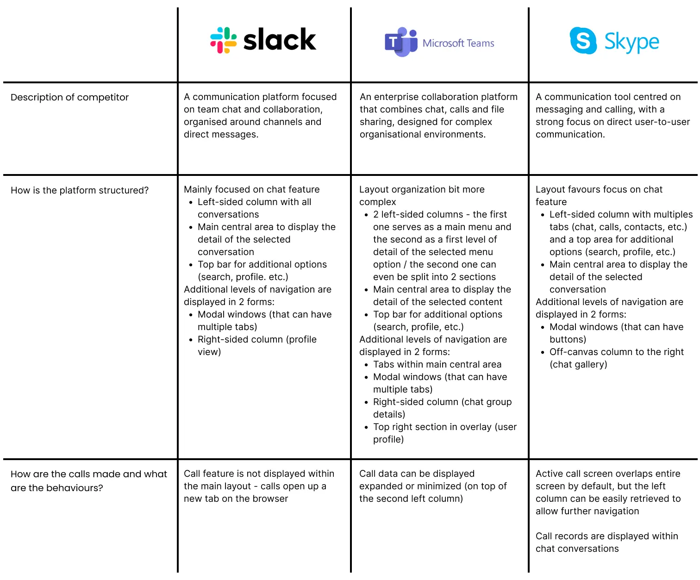
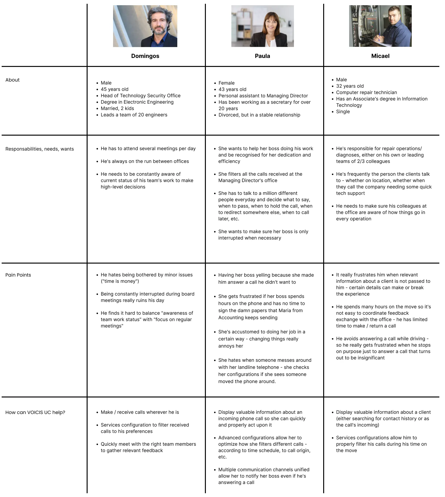
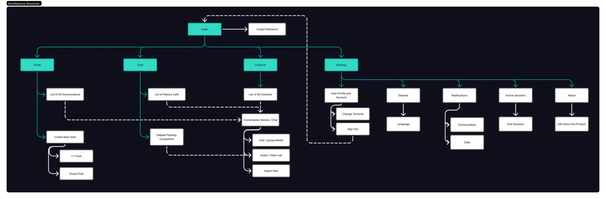

ITCENTER · Comunicações unificadas
VOICIS UC
O redesign de uma plataforma de gestão de chamadas: fluxos mais simples, uma interface moderna e chamadas que já não prendem o utilizador.

A versão curta
Uma estrutura pouco intuitiva, fluxos complexos e inconsistências visuais tornavam a plataforma difícil de aprender — e durante uma chamada não era possível usar o resto do sistema.
Análise competitiva, personas, arquitetura de informação e duas abordagens de wireframes revistas em conjunto com a equipa.
Chamadas que convivem com o chat e as outras tarefas, conversas de grupo e um design system criado de raiz.
Contexto e desafio
Há alguns anos, a ITCENTER desenvolveu uma plataforma unificada de gestão de chamadas com o objetivo de centralizar vários canais de comunicação num único sistema. A solução permitia gerir chamadas, monitorizar fluxos e apoiar o dia a dia das equipas técnicas e operacionais de outras empresas.
À medida que a plataforma cresceu e as necessidades dos utilizadores evoluíram, começaram a surgir limitações de experiência de utilização. A interface tinha uma estrutura pouco intuitiva, fluxos complexos e inconsistências visuais que dificultavam a aprendizagem do sistema, sobretudo para novos utilizadores. Além disso, o produto não correspondia totalmente às expectativas atuais de usabilidade, clareza da informação e escalabilidade.
Neste contexto, surgiu a necessidade de fazer um redesign da plataforma, com foco em melhorar a experiência de utilização, simplificar os principais fluxos e modernizar a interface.
Desafio
- Simplificar uma plataforma tecnicamente complexa sem comprometer funcionalidades críticas.
- Reorganizar os fluxos existentes sem perturbar as operações em curso.
- Criar uma estrutura escalável que suporte evoluções futuras do produto.
- Modernizar a interface segundo os padrões atuais de UX/UI sem perder a identidade.
Descobrir
Identificar os problemas atuais da plataforma
Além da interface desatualizada, a plataforma tinha limitações funcionais que afetavam diretamente o trabalho dos utilizadores:
- Durante uma chamada, não era possível aceder ao resto da plataforma sem desligar a comunicação.
- O chat não permitia partilhar ficheiros nem reagir a mensagens.
- Mudar de terminal obrigava a sair da plataforma, com logout e novo login.
Análise competitiva
O objetivo desta análise foi perceber como o Slack, o Skype e o Microsoft Teams — escolhidos pela sua forte presença nas ferramentas de comunicação e colaboração — distribuem funcionalidades e informação pela interface, identificando padrões eficazes que pudessem ser adaptados ao nosso produto.


Conclusões
- Todos os concorrentes usam navegação à esquerda combinada com uma área central de conteúdo.
- Esta estrutura suporta vários níveis de detalhe e acompanha a leitura da esquerda para a direita.
- A navegação adicional é feita com separadores, modais e painéis laterais, mas deve manter-se consistente.
- As chamadas devem continuar dentro da plataforma, suportando tanto o modo multitarefa como o modo de foco total na chamada.
Definir
Personas


Conclusões
- Mobilidade → precisam de atender e gerir chamadas a partir de qualquer lugar.
- Flexibilidade → querem reduzir interrupções irrelevantes e concentrar-se no que realmente importa.
- Acesso imediato ao que mais importa → histórico de contactos e dados relevantes para decidir depressa.
- Rapidez → a comunicação integrada melhora a coordenação entre equipas e gestão.
Idear
Arquitetura de informação


Design
Wireframes
Na fase de wireframes, explorámos duas abordagens e apresentámo-las à equipa. Cada ecrã e cada menu foram revistos em conjunto, e o feedback recolhido serviu para chegar a um consenso sobre a melhor solução para a nova versão.

Versão final
A apresentação da versão final está no Canva: ver a apresentação (abre noutro separador).
Chamadas que já não prendem
Com a nova abordagem, o utilizador pode manter ou receber chamadas enquanto continua a usar o chat da equipa ou qualquer outra tarefa em curso, numa experiência mais fluida, flexível e com mais autonomia.


Mais flexibilidade
Toda a informação e interação com um contacto reunidas numa única janela de conversa — uma experiência menos fragmentada.

Grupos e conversas em tempo real
A plataforma passa a incluir conversas de grupo, criando um espaço simples e organizado para as equipas colaborarem no dia a dia.

Design system
Este design system não surgiu como um mero exercício estético, mas como uma ferramenta estratégica. Ao definir uma paleta de cores consistente, regras claras de hierarquia tipográfica e um conjunto estruturado de componentes reutilizáveis, conseguimos:
- Garantir consistência visual em todas as interfaces e pontos de contacto.
- Reduzir ambiguidades no processo de design.
- Aumentar a eficiência da colaboração entre design e desenvolvimento.
- Minimizar retrabalho e inconsistências na implementação.


Aprendizagens
Redesenhar o Voicis foi muito mais do que um desafio técnico: foi a primeira vez que me senti um verdadeiro Product Designer. Aprendi que design não é só reunir referências de plataformas consolidadas; as ideias evoluem com a análise de mercado, o alinhamento com stakeholders e a colaboração direta com as equipas de desenvolvimento.
Neste projeto tive liberdade para explorar várias soluções para o mesmo problema, o que me deu a confiança necessária para defender e justificar as minhas decisões de design.
Também dei um passo no desconhecido ao decidir construir um design system de raiz. Procurei seguir boas práticas de organização e usar as variáveis do Figma de forma estratégica, para garantir uma base sólida, consistente e escalável para o futuro do produto.